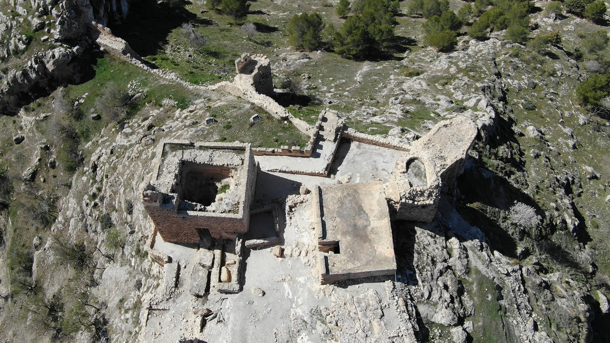

Moclín, 16 de marzo de 2026 – Visitantes y residentes han alertado sobre un aumento significativo de basura en las principales zonas turísticas del municipio de Moclín. Restos de envases, plásticos y desperdicios se han acumulado en calles y parques, generando preocupación por el impacto ambiental y la imagen del destino. Las autoridades locales han anunciado que intensificarán las campañas de limpieza y concienciación ciudadana, además de reforzar la vigilancia para reducir el abandono de residuos. Vecinos y turistas instan a la población a colaborar manteniendo limpias estas áreas, que representan un importante atractivo cultural y natural.
